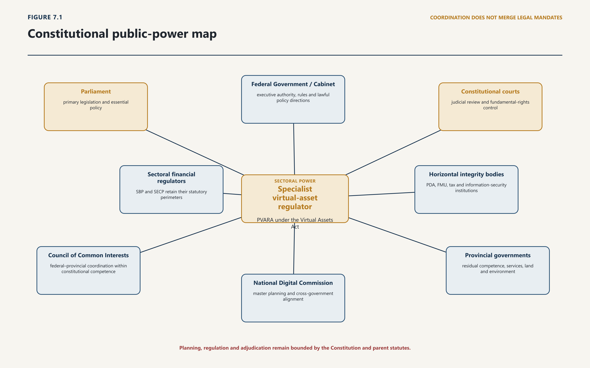
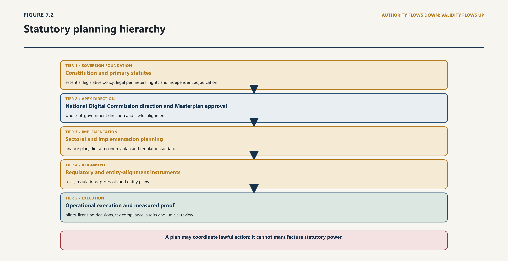
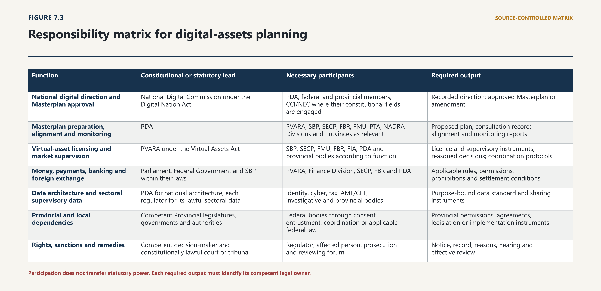

Chapter Seven · Part 2
Chapter 7 — Pakistan’s Digital, Electronic and ICT Legal Architecture
The Future of Digital Assets in Pakistan
7.1 The Constitutional Setting of Digital Public Power
7.1.1 Legality, rights, competence and delegation
1
[7.001] Pakistan does not enter the digital-asset field as an institutionally blank state. The Constitution already determines who may legislate, who may exercise federal executive authority, how public business is allocated, which rights constrain coercive and economic regulation, how federal and provincial authority interact, and where unlawful public action may be challenged. The Digital Nation Pakistan Act 2025 then creates a national digital-planning system. The Virtual Assets Act 2026 creates a sectoral regulator and a licensing, supervisory and enforcement system. Policy is lawful only when these layers remain connected in the right order.1
7.1.2 Digital administration and institutional accountability
2
[7.002] This chapter therefore asks a prior question to the sectoral analysis that follows: what makes a digital-assets policy an act of constitutional government rather than an announcement, an institutional preference or a technical programme? The answer has five elements. The state must identify a competent legislature or executive institution; act through a power conferred by the Constitution or law; use the instrument and procedure that the law requires; remain within fundamental-rights and federal limits; and preserve reasons, accountability and effective review. Technical sophistication, economic urgency and political endorsement may inform that process, but none supplies a missing legal power.
3
[7.003] The method is deliberately non-conclusory. A constitutional issue is not established merely because a statute is broad, a regulator is powerful or two mandates touch the same subject. The inquiry proceeds provision by provision. It identifies the public act; traces its source; distinguishes primary law, delegated instrument, policy and implementation; tests legislative and executive competence; identifies affected rights; examines procedure and review; and records whether coordination is mandatory, available or absent. Only then may the treatise classify the arrangement as constitutionally sound, qualified, vulnerable or requiring correction.
4
[7.004] The same discipline applies to national planning. A website description of a “Masterplan”, a procurement, an inter-agency meeting or a strategy announcement is evidence of activity, not proof of the statutory approval required by section 11 of the Digital Nation Act. The official records reviewed for this chapter show the Pakistan Digital Authority describing the National Digital Masterplan as being developed or written in July 2026 and show a closed procurement for an international consulting firm to assist with its design and implementation.2 No authenticated Commission approval instrument or approved Masterplan was located in the official public materials reviewed by the evidence cut-off. This is a bounded documentary finding, not a claim that approval is impossible, that no non-public work exists or that the statutory process has failed.
5
[7.005] The chapter consequently produces a test set rather than a declaration of invalidity. Chapters 7, 15, 16, 18 and 20 will apply that set to particular provisions, institutions, remedies, reforms and future systems. Where a later chapter has stronger authority or new evidence, it must update the result transparently rather than preserve this chapter’s provisional assessment by inertia.
6
[7.006] Constitutional consequence. Digital-assets governance begins with the legal identity of the actor, act, power, instrument and remedy. Strategy cannot float above the constitutional order, and technology cannot compress a chain of lawful authority into a single administrative decision.
7.2 Electronic Transactions and Legal Recognition
7.2.1 Electronic form, writing, originals and signatures
7
[7.007] The Electronic Transactions Ordinance 2002 supplies a cross-sector legal-recognition layer. Section 3 prevents information from being denied legal recognition, admissibility, effect or enforceability solely because it is electronic. Sections 4 and 5 address statutory writing and original-form requirements through accessibility, integrity and reliable assurance. The Ordinance therefore removes form-based barriers; it does not decide whether the underlying transaction, asset, person or activity is otherwise lawful.3
8
[7.008] That distinction matters for digital assets. An electronically executed customer agreement, transfer instruction, disclosure or regulatory filing may satisfy the applicable form requirement while remaining subject to the capacity, authority, licensing, consumer, exchange-control, tax or property rules that govern its substance. Equally, a blockchain entry is not inadmissible merely because it is electronic, but its legal meaning still depends on proof of attribution, integrity, control and the right that the entry is said to represent.
9
[7.009] Sections 6 to 9 govern retention, electronic signatures and advanced electronic signatures. A retained record must remain accessible and accurately represent the information, with origin, destination, date and time preserved where required. An electronic signature satisfies a signature requirement when the prescribed method identifies the person and indicates approval and is reliable and appropriate; an advanced signature receives specified presumptions unless the contrary is shown.4 These are reliability rules, not an endorsement of any particular wallet, protocol or private certification claim.
10
[7.010] For public and regulated systems the practical requirement is an evidence architecture. Each important electronic act should preserve the authorised user or system, credential or key used, version of the governing form or rule, time source, transaction identifier, original data, later alteration, acknowledgment, and route by which the record can be reproduced. A system that executes quickly but cannot show who authorised a consequential act remains legally fragile.
7.2.2 Attribution, dispatch, public filing and evidence
11
[7.011] The Ordinance connects electronic form to responsibility. Section 13 provides attribution rules, including circumstances involving an authorised person or an automated information system. Sections 14 and 15 address acknowledgment, dispatch and receipt; section 16 permits an appropriate authority to accept, issue, create, retain or publish electronic documents and to prescribe form, signatures, security and payment method.5 Public digitisation is therefore neither legally automatic nor legally exceptional: the competent authority must use the powers and conditions that apply to the transaction.
12
[7.012] These rules should be read with the amendments to the Qanun-e-Shahadat Order 1984 in the Ordinance's Schedule. The amendments recognise electronic documents and information systems, address presumptions concerning electronic records, prevent electronic material from being denied primary-evidence status solely because of its form, and provide for proof of electronic signatures and documents. They do not abolish authentication or permit a printout, dashboard or screenshot to prove more than its provenance and integrity support.6
13
[7.013] In a virtual-asset setting the evidential chain may cross several systems: customer interface, identity service, bank or payment intermediary, exchange ledger, blockchain, custody system, monitoring engine and regulator portal. The records need not be held by one institution, but their timestamps, identifiers, retention periods and lawful-access routes should be capable of reconciliation. Where a machine makes or recommends a material decision, the retained record should include the rule version, relevant inputs, output, exception handling and responsible human authority.
14
[7.014] Legal consequence. The Ordinance makes electronic form legally usable and supplies attribution and evidential tools. It does not convert technical control into legal title, cure an unlawful service or expand the mandate of the body receiving the record.
7.3 Cybercrime, Systems and Communications
7.3.1 PECA offences and the sectoral boundary
15
[7.015] The Prevention of Electronic Crimes Act 2016, as amended through 2025, creates offences directed to unauthorised access, copying, interference, critical-infrastructure systems and data, electronic fraud and forgery, identity information, malicious code and specified content-related conduct.7 Those offences can apply to conduct involving exchanges, wallets, credentials, smart-contract interfaces, customer databases and digital-asset communications. The legal trigger remains the elements of the particular offence; the presence of a virtual asset does not create a free-standing cyber offence.
16
[7.016] PECA accordingly occupies a different field from sector regulation. PVARA may address authorisation, prudential conduct, custody, market integrity and customer protection under the Virtual Assets Act. PECA addresses criminal conduct and the investigation of electronic evidence under its own provisions. A regulator may report suspected conduct or preserve material under a lawful duty, but it cannot transform a licensing breach into a PECA offence, direct a criminal search without statutory authority or replace the authorised investigation agency.
17
[7.017] This boundary protects both enforcement and legality. A compromised private key may indicate unauthorised access; a false electronic representation may engage fraud or forgery; use of another person's identity information may engage section 16; and interference with a designated critical system may attract the enhanced regime. Each conclusion requires evidence of the statutory elements, the applicable mental element and the identity of the actor. Loss, transaction irreversibility or customer complaint alone does not prove the offence.
7.3.2 Investigation, preservation, platforms and safeguards
18
[7.018] PECA's investigation architecture is specific. Section 29 identifies the investigation agency and confines investigation to authorised officers. Sections 31 to 36 address expedited preservation, retention of traffic data, warrants for search, seizure and disclosure, the authorised officer's powers, proportionality, integrity of seized data and related handling. Section 39 permits real-time collection only under a court order of limited duration, with stated relevance, confidentiality and privacy protections.8
19
[7.019] For digital-asset systems these provisions require a disciplined handoff. A provider receiving a valid preservation demand should preserve the described data without converting preservation into unrestricted disclosure. A regulator sharing supervisory material should identify its own power to disclose and the recipient's power to receive. Wallet attribution, device data, IP records, customer identity, bank records and transaction-graph analysis should be distinguished rather than collapsed into a single assertion that an address belongs to a person.
20
[7.020] Sections 37 and 38 separately regulate unlawful online content and service-provider liability. Section 37 provides statutory machinery for removal or blocking and for review and appeal; section 38 conditions service-provider liability and rejects a general obligation proactively to monitor or investigate merely because a person provides a service. Sections 40 to 42 address forensic capacity, confidentiality and international cooperation.9 These provisions may intersect with a platform or virtual-asset service, but they are not a substitute for a sectoral suspension, licence condition or customer-asset protection measure.
21
[7.021] An operational protocol should therefore distinguish four acts: regulatory information collection; criminal preservation; compelled disclosure or interception; and content or access restriction. For each, the protocol should identify the initiating authority, legal threshold, approving court or officer, scope, duration, confidentiality, customer notice where lawful, data-integrity control, review route and termination. Shared technology does not justify shared coercive power.
22
[7.022] Legal consequence. PECA supplies offences, investigative tools and platform rules with their own thresholds and safeguards. Digital-asset supervision may connect to that system, but it cannot absorb or bypass it.
7.4 Digital Identity, Data and Public Infrastructure
7.4.1 Identity systems, authentication and data exchange
23
[7.023] The National Database and Registration Authority Ordinance 2000 establishes NADRA and authorises national databases, a data warehouse, identity documents and information exchange subject to the Ordinance. Sections 5 to 7 address the Authority, its functions and the sharing or supply of data; section 19 gives the national identity card specified evidential use; sections 22 and 23 concern information from other authorities and proof; and sections 28 and 29 impose non-divulgence and security controls.10
24
[7.024] Identity proof is not universal legal proof. A verified identity can establish that a credential or record corresponds to a person under the applicable system. It does not by itself establish beneficial ownership of a wallet, authority to act for a company, title to an asset, source of funds, residence for every fiscal purpose or the lawfulness of the transaction. Those propositions require their own evidence and legal rules. Public and private systems should therefore record the proposition actually verified instead of presenting an identity match as a complete compliance conclusion.
25
[7.025] Authentication also needs lifecycle controls. Enrolment, credential issue, recovery, correction, suspension, death, guardianship, corporate authority, delegation and compromise can change whether an identity assertion remains reliable. A digital-assets interface should preserve the source, date, method and result of authentication; distinguish identity data from risk inference; and allow correction or escalation where the authoritative record is disputed. It should not copy more identity data than the receiving institution is legally entitled to hold.
7.4.2 Security, data governance and the general-law gap
26
[7.026] Pakistan's data obligations are distributed across constitutional rights, identity, cybercrime, sectoral secrecy, evidence, public-record and regulatory statutes. The Digital Nation Pakistan Act gives the PDA national data-strategy, governance and architecture functions; PECA contains preservation, disclosure, confidentiality and investigation rules; NADRA's Ordinance protects specified identity information; and payment and financial laws add sector-specific duties. Those sources can operate cumulatively, but none should be treated as a silent general authorisation for unlimited collection or inter-agency access.11
27
[7.027] The official materials reviewed at the legal cut-off describe personal-data legislation as a bill or proposed Act and do not establish, by themselves, commencement of an enacted general cross-sector code.12 The publication-safe conclusion is therefore bounded: every processing operation in this chapter must be traced to the currently applicable constitutional, statutory and sectoral source, while the status of any later general enactment must be checked against the Gazette before print lock.
28
[7.028] A lawful data exchange should identify controller or legal custodian, purpose, fields, source, recipient, legal basis, access class, accuracy and correction process, retention, security, onward use, audit, breach handling and redress. Standing access is not necessarily proportionate merely because repeated individual requests would be inconvenient. Conversely, privacy does not require institutions to ignore a lawful, specific and reviewable demand. The design task is to make authority and limits executable.
7.4.3 Property, privacy, equality and economic participation
29
[7.029] Digital administration affects control over value, confidentiality of transactional data, access to lawful economic activity and the distribution of exclusion. Articles 14, 18 and 23 to 25 therefore supply connected but distinct constraints. Article 18 permits lawful regulation and licensing, but the Supreme Court has rejected the proposition that unreasonable restraints become permissible merely because the text does not use the phrase “reasonable restriction”.13 The wider lesson is that an eligibility rule, data demand or automated restriction must remain connected and proportionate to its lawful purpose.
30
[7.030] Articles 23 and 24 protect constitutionally recognised property interests and require lawful authority for deprivation. Whether every digital token is property for every private-law purpose is outside this chapter. The immediate public-law point is narrower: freezing, seizing, transferring, destroying or preventing access to a digital asset or account requires a legal source, stated conditions, custody controls, duration, hearing or justified urgency, review and lawful disposition. Technical ability to control a key, account or ledger entry is not the same as legal entitlement.
31
[7.031] The official public record also illustrates the need to separate activity from legal status: procurement and public statements can evidence work on the National Digital Masterplan without proving the approval required by section 11.14
32
[7.032] Article 14 makes dignity inviolable and protects the privacy of home subject to law. Pakistani case law treats covert surveillance and communications privacy as constitutionally serious while distinguishing information already held in public property records.15 A public blockchain lies between those examples. A wallet address may be visible, but linking it to identity, device, tax, payment or behavioural data can create a substantially different intrusion. “Public ledger” is not a complete privacy analysis.
33
[7.033] Article 25 also requires attention to operational exclusion. A facially neutral identity, connectivity, language, capital or data requirement can exclude smaller firms, rural users, women, persons without conventional documentation and users with disabilities. The answer is not to remove controls needed to address demonstrated risk. It is to test the evidence, provide lawful alternatives where feasible, measure disparate effects and preserve a contestable human decision for materially adverse automation.
34
[7.034] Constitutional consequence. Identity, data and automated decision systems exercise legally accountable power. They must state what proposition is being proved, what data may be used, who may act on it and how a person can correct or challenge the result.
7.5 The Digital Nation Pakistan Act
7.5.1 Institutional design, planning and implementation
35
[7.035] The Digital Nation Pakistan Act 2025 does not merely establish another technology body. It creates a statutory planning system with three connected levels: the National Digital Commission, the Pakistan Digital Authority and the National Digital Masterplan. The Commission supplies political and intergovernmental direction and approval. The PDA supplies expert preparation, coordination, standards, monitoring and implementation. The Masterplan supplies the central framework to which identified entities and digital initiatives are to align.16
7.5.2 Current status, delegated architecture and unresolved execution
36
[7.036] The Commission is chaired by the Prime Minister and includes all Provincial Chief Ministers; the federal ministers responsible for information technology, planning, finance, commerce, interior, economic affairs and information; senior leadership from FBR, NADRA, PTA, SECP and SBP; and the PDA Chairperson as secretary. This composition makes it capable of exposing conflicts across monetary, market, fiscal, identity, communications, security, economic and provincial institutions. Its functions include approval of the Masterplan and implementation plans, strategic direction and governance for the PDA, coordination, alignment directives, resource questions and responses to non-compliance or exceptions.
37
[7.037] The PDA is a statutory body corporate, not a policy unit within a ministry. It develops, implements, monitors and updates the Masterplan; facilitates coordination; creates monitoring and evaluation; reviews digital public-entity projects; advises the concerned Division on laws, rules, regulations and policies; and carries assigned oversight and standard-setting responsibilities. Its virtual-assets and emerging-technology remit is expressly limited by the requirement to avoid overlap with another regulator’s mandate and conflict with existing law. That proviso is a rule of statutory conduct, not a courtesy.
38
[7.038] Institutional capacity and accountability sit alongside mandate. The Act prescribes the PDA’s leadership structure and tenure, allows removal only through its stated route, establishes an Oversight Committee, and requires budget, audit and annual reporting. Those features should be read as governance controls, not administrative detail. A body able to set national standards, review public projects and report non-compliance needs declared conflicts, decision records, secure information governance, procurement discipline and performance measures that distinguish adoption from lawful outcome. Independence from ad hoc pressure and accountability for statutory performance are complementary.
39
[7.039] Section 11 gives the Masterplan defined legal content. It is to be developed and proposed by the PDA and approved by the Commission. It must include a strategic framework; sectoral plans, including finance; a digital economy development plan; implementation plans stating projects, resources, timelines and risk-management strategies; technology standards and reference architectures; and governance frameworks. Development requires consultation with sector bodies, regulators, federal entities and Provincial Governments. Annual review and Commission-approved amendment preserve adaptation without allowing continual informal change.17
40
[7.040] Section 12 then connects plan to administration. Identified entities are to align policies, operations and digital initiatives with the Masterplan and develop alignment plans. The PDA monitors compliance, reports, recommends corrective measures and may escalate non-compliance. Ministries, Divisions, departments and other bodies must cooperate within the Act. Sections 13–16 add fund, budget, audit and annual-report duties, including key performance indicators and Masterplan progress, and require public reporting through the website.
41
[7.041] The resulting public-power map is not a hierarchy in which the PDA commands every regulator. It is a set of legally bounded relationships.

42
[7.042] The arrows represent legally possible or required relations, not a transfer of jurisdiction. The CCI and NEC retain constitutional functions. Sector regulators retain their parent-statute mandates. Provincial participation in the Commission does not surrender provincial competence. Judicial review remains governed by the Constitution. And federal executive action still travels through Article 99 and the Rules of Business even when the policy subject is digital.
43
[7.043] The Act also imposes a discipline of evidence. A Masterplan implementation claim should be supported by an approved plan, responsible entity, alignment instrument, funded project, milestone and monitoring record. Commission approval should be identifiable. Standards and directives should disclose their statutory basis, approvals, effective version and relationship to sectoral law. Without those records, institutional activity may be useful, but its legal status remains uncertain.
44
[7.044] Constitutional consequence. The Digital Nation Act creates an approval, implementation and accountability chain. It coordinates power without amalgamating it. Its success depends on authenticated instruments, recorded allocations and measurable alignment—not on treating the PDA’s broad purpose as an unlimited regulatory mandate.
7.6 The Digital Presence Proceeds Tax Act 2025
7.6.1 A fiscal connecting rule, not a general digital licence
45
[7.045] The Digital Presence Proceeds Tax Act 2025 is Act XIX of 2025, enacted through section 12 of the Finance Act 2025 and brought into force at once. Section 3 charges a foreign vendor with a significant digital presence on proceeds from supplies made from outside Pakistan of digitally ordered goods or services to Pakistani users. Section 4 requires aggregate supplies exceeding PKR 1 million in a financial year plus at least one specified connection, including user data, local payment, delivery or support responsibility, or continuing marketing. The Schedule states a rate of five per cent for services, including social-media advertising, and goods.18
46
[7.046] Those provisions create a fiscal nexus and charge. They do not create a general platform jurisdiction, a virtual-asset authorisation, a communications licence or a data-governance power. A person may fall within a tax definition while lacking permission required by another law; equally, regulatory permission does not displace a tax that is lawfully chargeable. Classification under each statute must be performed independently before cumulative consequences are mapped.
7.6.2 Collection machinery, exemption and present legal effect
47
[7.047] The enacted machinery is substantial. Section 5 assigns collection to payment intermediaries remitting proceeds abroad and requires deposit by the seventh day of the following month; section 6 addresses foreign-vendor payments for online advertising. Section 7 provides recovery and a KIBOR-plus-three-per-cent default surcharge after an opportunity to be heard. Sections 8 and 9 require quarterly information, section 10 sets a PKR 1 million penalty for each filing default, section 11 provides for suspension of specified remittances, and section 12 creates an appeal to the Appellate Tribunal Inland Revenue followed by a High Court reference on a question of law.19
48
[7.048] That machinery must be read with SRO 1366(I)/2025, dated 30 July 2025 and effective from 1 July 2025. Exercising section 15, the Federal Government directed that the tax shall not apply to digitally ordered goods and services supplied from outside Pakistan by any person that would otherwise be chargeable under the Act.20 On the official texts located for this repair, the general exemption means the statutory framework remains enacted but the charge is not presently to be presented as operative against the exempted class. Before enforcement advice or print lock, the notification register must be rechecked for amendment, withdrawal or replacement.
49
[7.049] The distinction between enactment and present chargeability is essential. A publication that states only the five-per-cent Schedule overstates current effect; a publication that says the Act has disappeared understates the continuing statute and the Government's power to alter the exemption through the legally authorised route. The accurate status label is: enacted fiscal framework; general section 15 exemption located; current application subject to the continuing validity and scope of that notification.
7.6.3 Virtual-asset payments, information and review
50
[7.050] Where a cross-border purchase is paid through a virtual asset, the Act's application cannot be assumed from the payment medium alone. The analysis still requires the statutory supplier, Pakistani user, digitally ordered good or service, significant digital presence, proceeds and collection mechanism. If a payment intermediary is involved, its role must be established under the enacted definition and the operative exemption. Valuation, refunds, exchange rates and records require clear rules; a collecting institution should not be forced to determine virtual-asset title or regulatory status unless another law gives it that task.
51
[7.051] The information provisions also connect tax administration to privacy and data governance. Section 8 calls for purchaser identity, transaction identifiers, values and collected tax, while platform reporting under section 9 concerns advertising clients and receipts. Collection and transfer should therefore be confined to the statutory purpose, protected by the applicable confidentiality rules, retained for a legally supportable period and made contestable where inaccurate. The existence of relevant data in a bank, platform or ledger does not itself authorise every public body to obtain it.
52
[7.052] Article 77 requires federal tax to be levied by or under authority of an Act of Parliament. The Act supplies the primary charge, collection, penalty and appeal structure; the section 15 notification presently changes application within the delegated exemption power. Any future withdrawal or narrowing should be authenticated, published, dated and applied with enough operational clarity for intermediaries and affected vendors to identify the effective charge and review route.21
53
[7.053] Fiscal consequence. The Act is a tax statute with an enacted nexus and machinery, presently qualified by a broad official exemption. It neither authorises digital-market entry nor transfers payment, communications or virtual-asset jurisdiction.
7.7 Payments, Telecommunications and ICT Regulation
7.7.1 Payment and settlement infrastructure
54
[7.054] The Payment Systems and Electronic Fund Transfers Act 2007 supplies the primary statutory framework for payment systems and electronic fund transfers. Its definitions include electronic money, electronic fund transfer, payment instruments, operators, participants and service providers. Section 3 gives the State Bank regulatory powers; sections 4 to 7 address designation, real-time gross settlement and records.22 These provisions govern the fiat and payment-system leg even where a related asset transfer is recorded on a distributed ledger.
55
[7.055] The Act also treats infrastructure and customer protection as connected. Sections 10 to 15 address governance, operational arrangements, settlement and security risks, finality and payment instruments. Sections 29 to 43 regulate consumer notice, disclosure, documentation, error correction, liability and burden of proof. Sections 70 and 71 add secrecy and a complaint route to the State Bank.23 A compliant virtual-asset interface should therefore identify when value leaves or enters the regulated payment system, which institution bears the payment instruction, when settlement becomes final, how an error is raised and which records support the answer.
56
[7.056] State Bank instruments add functional detail. The Regulations for Electronic Money Institutions address licensing and operation of non-bank electronic-money providers; the 2025 Raast participation criteria govern access to Pakistan's instant-payment system.24 Neither should be treated as a virtual-asset licence. Conversely, a PVARA permission cannot authorise deposit-taking, electronic-money issuance or payment-system participation that remains within State Bank law.
57
[7.057] The correct interface is a two-leg record. It should show the regulated fiat or electronic-money instruction, institution, account, time, amount and finality; the digital-asset instruction, network, wallet, transaction identifier and custody state; and the contractual rule that connects them. Reconciliation should not erase the possibility that one leg settles while the other fails. Customer terms, reserves, suspense handling, refunds and insolvency treatment must allocate that risk in legally intelligible form.
7.7.2 Communications, platforms and cumulative duties
58
[7.058] The Pakistan Telecommunication (Re-organization) Act 1996 establishes the PTA and gives it functions concerning telecommunication systems and services, spectrum, user interests, competition, standards and complaints. Sections 20 to 23 establish the licensing and enforcement structure; section 54 contains the national-security and interception provision.25 The relevant question is functional: whether the person operates or provides the system or service governed by the Act, not whether the commercial product also involves a virtual asset.
59
[7.059] Communications reach can therefore be cumulative. Connectivity, numbering, messaging, hosting, platform access and lawful interception may engage PTA or PECA powers; payment functionality may engage the State Bank; digital-asset services may engage PVARA; tax reporting may engage FBR. A single customer interface does not make those mandates interchangeable. It requires a responsibility map that states which function triggers which law and which institution remains answerable for the decision.
60
[7.060] PECA's content and service-provider provisions add a separate layer. A blocking or removal process under section 37, service-provider liability under section 38 and real-time collection under section 39 have their own thresholds, safeguards and review paths.26 A market supervisor's concern about an unauthorised service should be routed through the legal power applicable to the proposed response; it should not be translated informally into a communications restriction without the statutory decision and record.
61
[7.061] Coordination should minimise duplicate demands but preserve separate legal ownership. A common request gateway can route information efficiently if it identifies the initiating power, requested fields, purpose, deadline, confidentiality, recipient and review. A common technical standard can improve interoperability if it discloses the statutory owner and version. Neither mechanism may turn consultation into a joint coercive power that no statute created.
62
[7.062] Regulatory consequence. Payment finality, communications licensing, platform duties and virtual-asset supervision attach to different functions. Coherence requires auditable handoffs and customer-facing responsibility, not a single undifferentiated digital licence.
7.8 Integration and Fragmentation
7.8.1 Overlapping definitions, authorities and remedies
63
[7.063] The Masterplan’s architecture moves from national direction to sectoral specificity and then to executable projects. A strategic framework states the common vision, principles, objectives and priorities. A finance sectoral plan applies them to the financial system. The digital economy development plan addresses the wider conditions for enterprise, skills, infrastructure and participation. Implementation plans identify projects, resources, timelines, risks, monitoring and responsible Divisions. Standards, reference architectures and governance frameworks create reusable technical and institutional constraints.
7.8.2 Gaps between digital, electronic, financial and virtual-asset laws
64
[7.064] This nesting matters because a digital-assets strategy touches several plans without being identical to any one of them. Its licensing and market-supervision core belongs with PVARA and connected financial regulators. Its public-infrastructure, interoperability and data-governance dependencies belong within the whole-of-government digital architecture. Its enterprise, investment and workforce measures connect to the digital economy plan. Its tax, foreign-exchange, enforcement, consumer and provincial consequences require their own competent institutions. A single strategy document should make those dependencies visible; it should not pretend to own them.

65
[7.065] The hierarchy prevents three common category errors. A procurement is not the Masterplan; it may procure assistance to prepare or implement one. A technical standard is not a sectoral legal regime; it operates within statutory authority and cannot contradict the competent regulator’s law. A pilot is not policy proof; it is a bounded implementation method whose result must be evaluated against stated criteria.
66
[7.066] Every implementation plan should therefore contain a legal workstream. For each project it should identify the statutory purpose, competent sponsor, decision-maker, data authority, procurement route, fiscal approval, applicable standard, sectoral licence or permission, provincial dependency, rights impact, review route and exit condition. A project should not pass its design gate if a material legal dependency is merely described as “to be resolved”. It may proceed as a limited discovery exercise where no coercive or public exposure is created, but the unresolved issue must remain an explicit gate.
67
[7.067] A portfolio view is equally necessary. Several individually rational pilots may depend on the same identity service, cloud environment, payment rail, data exchange, supervisory staff or provincial interface. The implementation plan should expose those shared dependencies, aggregate cost and concentration risk, and state which project has priority if the common capacity is insufficient. A reusable platform should not be procured through fragmented projects that create incompatible technical or contractual control. Conversely, a common architecture should not force a sector regulator to accept a control that conflicts with its law.
68
[7.068] Planning should also distinguish targets from legal obligations. A target may set a desired adoption rate, service time, investment level or interoperability milestone. It does not authorise compulsory onboarding, data sharing, expenditure or sanction. Conversely, a statutory duty should not be reported as achieved by announcing a target. Monitoring must record output, outcome, legality and distribution: what was built; whether it worked; under which authority; for whom; at what cost; with what errors, exclusions and remedies.
69
[7.069] Constitutional consequence. National planning becomes executable when every initiative descends through an approved plan, responsible institution, lawful instrument, funded implementation route and reviewable record. A project cannot bootstrap the authority needed to justify itself.
7.9 A Coherent Digital Legal Order
7.9.1 Principles for statutory interaction
70
[7.070] Overlap is not inherently a constitutional defect. A digital-asset transaction may legitimately engage PVARA licensing, SBP payment or foreign-exchange rules, SECP securities or company law, FBR taxation, FMU reporting, FIA investigation, PDA data standards and provincial consumer or service law. The defect arises when institutions issue incompatible commands, duplicate coercion, leave a risk unowned or rely on informal relationships where law requires a decision.
7.9.2 Handoff to the Virtual Assets Act and PVARA
71
[7.071] The Digital Nation Act addresses statutory conflict in section 28. Its override clause is qualified by the priority preserved for data, data-governance and cybersecurity laws. Where a conflict arises between the PDA’s functions and another regulatory body’s powers, section 28(3) requires a consultative process; the Commission may issue recommendations or directives within the statutory framework or propose legislative action.27 This is conflict-resolution machinery. It is not a general provision assigning every digital subject to the PDA, and it does not allow a Commission directive to amend another Act.
72
[7.072] The Rules of Business add an executive coordination route. A Division in charge of a case concerning more than one Division must consult the others before orders issue or the matter goes to the Prime Minister or Cabinet. Unresolved differences move through the Ministers, Prime Minister or Cabinet, while Cabinet Division decides disputes about allocation or interpretation of the Rules. Current Schedule II places the PDA under the Information Technology and Telecommunication Division and PVARA under the Cabinet Division.28 Their July 2026 collaboration meeting is evidence of engagement, but it is not itself the allocation instrument contemplated by the statutes and Rules.29
73
[7.073] The minimum coordination instrument should state: the issue and statutory powers engaged; the lead and participating bodies; decisions each body retains; information that may be shared and its lawful basis; consultation triggers and deadlines; emergency arrangements; sequencing of inspections, restrictions and sanctions; treatment of disagreement; public-facing responsibility; reporting; review; and amendment or expiry. Where an instrument affects legal rights, it must use the legally authorised form and publication route. An unpublished memorandum cannot impose a new duty on the public.

74
[7.074] Table 7.1 — Accessible allocation and handoff matrix underlying Figure 7.3
| Function | Constitutional or statutory lead | Necessary participants | Required output |
|---|---|---|---|
| National digital direction and Masterplan approval | National Digital Commission under the Digital Nation Act | PDA; federal and provincial members; CCI/NEC where their constitutional fields are engaged | Recorded direction; approved Masterplan or amendment |
| Masterplan preparation, alignment and monitoring | PDA | PVARA, SBP, SECP, FBR, FMU, PTA, NADRA, Divisions and Provinces as relevant | Proposed plan; consultation record; alignment and monitoring reports |
| Virtual-asset licensing and market supervision | PVARA under the Virtual Assets Act | SBP, SECP, FMU, FBR, FIA, PDA and provincial bodies according to function | Licence and supervisory instruments; reasoned decisions; coordination protocols |
| Money, payments, banking and foreign exchange | Parliament, Federal Government and SBP within their laws | PVARA, Finance Division, SECP, FBR and PDA | Applicable rules, permissions, prohibitions and settlement conditions |
| Data architecture and sectoral supervisory data | PDA for national architecture; each regulator for its lawful sectoral data | Identity, cyber, tax, AML/CFT, investigative and provincial bodies | Purpose-bound data standard and sharing instruments |
| Provincial and local dependencies | Competent Provincial legislatures, governments and authorities | Federal bodies through consent, entrustment, coordination or applicable federal law | Provincial permissions, agreements, legislation or implementation instruments |
| Rights, sanctions and remedies | Competent decision-maker and constitutionally lawful court or tribunal | Regulator, affected person, prosecution and reviewing forum | Notice, record, reasons, hearing and effective review |
75
[7.075] Constitutional consequence. Coordination must preserve, not blur, legal ownership. The test is whether the public can identify who decides, who must be consulted, which law prevails, how disagreement is resolved and where an affected person goes for relief.
7.9.3 The Lawful Home for a Digital-Assets Strategy
76
[7.076] A national digital-assets strategy is needed because the Virtual Assets Act governs a sector whose operation depends on monetary, market, tax, data, enforcement, infrastructure, provincial and development decisions beyond PVARA alone. But “national strategy” is not a legal form. Its authority and consequences depend on where it is made, who approves it, which statutory components it occupies and which instruments implement it.
77
[7.077] The strongest lawful home is a digital-assets programme within the Commission-approved National Digital Masterplan, principally located in the finance sectoral plan and cross-referenced in the digital economy development plan. Section 11 expressly includes finance among the sectoral plans and requires implementation plans, standards, architectures and governance frameworks. That location supplies national coordination, Provincial participation, annual review, alignment and monitoring. It also prevents the strategy from becoming an isolated statement detached from public infrastructure and implementation resources.
78
[7.078] That placement does not subordinate PVARA’s regulatory judgments to the PDA. The programme should contain two coordinated layers.
79
[7.079] The first is the national planning layer: objectives; constitutional and statutory allocation; digital-public-infrastructure and identity dependencies; national data architecture; institutional capacity; economic-development measures; provincial interfaces; public-sector projects; milestones; resources; risks; monitoring; and review. The PDA prepares and integrates this layer through statutory consultation, and the Commission approves the relevant Masterplan components.
80
[7.080] The second is the sectoral regulatory layer: classification; authorisation; prudential and reserve rules; custody and customer assets; issuance; market conduct; AML/CFT; disclosures; supervision; sanctions; resolution and exit. PVARA, SBP, SECP and other competent institutions make or propose these decisions under their parent laws. The National Digital Commission may coordinate and align, but cannot replace a statutory board, central-bank power, federal tax law, provincial permission or judicial function.
81
[7.081] A Cabinet- or Prime Minister-approved executive policy may also be necessary. Under Articles 90 and 99 and the Rules of Business, important policy and inter-division decisions require the appropriate federal route. Such a policy can state the Federal Government’s position, direct Divisions within lawful authority, approve proposals and allocate executive work. It cannot amend the Digital Nation or Virtual Assets Acts, compel an independent statutory decision contrary to law, create a tax or offence, appropriate money outside lawful process, or convert an unapproved Masterplan into an approved one.
82
[7.082] The strategy should therefore be assembled as an instrument stack rather than one omnipotent document:
83
[7.083] a recorded federal policy decision, where required under the Rules of Business;
84
[7.084] Commission-approved Masterplan components under section 11;
85
[7.085] a finance sectoral plan and digital economy cross-reference;
86
[7.086] implementation plans allocating projects, money, time, risk and responsibility;
87
[7.087] sectoral Rules, Regulations, standards, licences and directions made by competent bodies;
88
[7.088] provincial legislation, approvals, agreements or entrusted functions where needed; and
89
[7.089] public monitoring, annual review, audit and correction records.
90
[7.090] Its substantive programme should be equally disciplined. It should define the permitted and contained functions; state monetary and foreign-exchange boundaries; allocate token and service classification; specify licensing and transition; protect customer assets and exit; integrate AML/CFT, tax, cyber, privacy and evidence; identify responsible-infrastructure projects; address provincial consumer, energy and service-tax interfaces; establish workforce and supervisory capacity; and set measurable outcome, harm and correction indicators. Each workstream should name the legal owner and instrument rather than using “Government” as an undifferentiated actor.
91
[7.091] The strategy’s first annex should be a legal allocation table. Its second should be an evidence baseline. Its third should be an implementation register. The baseline must distinguish measured facts from estimates, policy assumptions and targets. The register must distinguish approved, funded, procured, operational, evaluated and scaled activity. No claim of implementation should rest on an announcement or MoU alone.
92
[7.092] The timing issue is immediate. Official records reviewed by 15 August 2026 describe the Masterplan as under preparation and separately show work on a National Digital Economy Strategy.30 That creates an opportunity to place digital assets inside the statutory hierarchy before parallel documents harden into competing policy centres. The legal task is not to add a virtual-assets chapter wherever convenient. It is to ensure the finance plan, digital-economy plan, PVARA programme and federal executive decision point to the same allocation, milestones and correction routes.
93
[7.093] Constitutional consequence. The lawful home is neither PDA ownership nor PVARA isolation. It is a Commission-approved planning programme with sectoral regulatory autonomy preserved, executive approvals lawfully taken, provincial dependencies expressed and every coercive measure implemented through its proper legal instrument.
7.9.4 The Constitutional-Planning Test Set
94
[7.094] The preceding analysis can be reduced to a repeatable set of questions. It is not a checklist whose boxes prove constitutionality. It is an ordered inquiry designed to reveal where a policy lacks authority, connection, evidence or remedy.
95
[7.107] The result should be recorded as satisfied, qualified, failed or not yet evidenced, with the controlling source and corrective instrument. “Qualified” means the authority exists but a condition, dependency or safeguard remains material. “Not yet evidenced” is not failure; it prevents a documentary absence from becoming an unsupported substantive conclusion. A failure should identify the missing legal element and whether correction requires primary legislation, delegated legislation, executive decision, planning approval, intergovernmental action, administrative redesign or adjudication.
96
[7.108] This test set also disciplines future-facing systems. A smart licence, automated reporting gateway or machine-executable rule must pass the same authority and rights tests as its analogue counterpart, plus provenance, version, explanation, security, error and human-override controls. Automation can make compliance more consistent and visible. It cannot make an unlawful decision constitutional.
97
[7.109] The tests apply across statutory architecture, institutional allocation, enforcement, tribunal design, judicial remedies, lawful instrument choice and machine-readable legal systems. Each application must state the evidence date and may not inherit a “pass” merely because the same measure appeared in an earlier policy document.
98
[7.110] Constitutional consequence. An intelligent legal order is not one that predicts every technical development. It is one that can always answer who acted, under what law, for what reason, with what evidence, subject to which limit, accountable to whom and correctable by what route.
Chapter 7 Conclusion
99
[7.111] Pakistan's digital legal order is plural. Electronic recognition, cybercrime, identity, national digital planning, telecommunications, payments, tax and virtual-assets law attach to different functions through different institutions. Their overlap calls for defined interfaces, shared standards and lawful information exchange, not a presumption that one digital statute supersedes the others.
100
[7.112] The result is a cumulative legal map. PVARA permission does not settle ICT, payment, data or fiscal obligations; a Pakistan-facing digital tax nexus does not grant market access; and Digital Nation coordination does not transfer a sector regulator's jurisdiction. Coherence must be built through authenticated instruments and reasoned handoffs.
Footnotes
- ↑ Constitution of the Islamic Republic of Pakistan 1973, especially arts 4, 8–10A, 14, 18–19A, 23–25, 77–78, 90, 97–99, 141–149, 153–156, 175, 175E–175F, 199 and 202A, and Fourth Schedule; Digital Nation Pakistan Act 2025 (Act I of 2025); Virtual Assets Act 2026 (Act XIII of 2026) (‘VAA’).
- ↑ Pakistan Digital Authority, ‘Procurement’ <https://www.pda.gov.pk/procurement.php>; Pakistan Digital Authority, ‘PVARA Chairman Bilal Bin Saqib meets PDA Chairman, Dr Sohail Munir, to Discuss Institutional Collaboration’ (2 July 2026) <https://www.pda.gov.pk/press-details.php?id=pvara-collaboration>; Pakistan Digital Authority, ‘PDA Meets Fauji Group of Companies to Advance Pakistan’s Digital Transformation’ (16 July 2026) <https://www.pda.gov.pk/press-details.php?id=pda-fauji>; Pakistan Digital Authority, ‘Collaboration at the Core: NA Standing Committee Chairman Syed Amin Ul Haque meets PDA Chairman’ (2 July 2026) <https://www.pda.gov.pk/press-details.php?id=amin-ul-haque> accessed 26 August 2026. The finding is confined to the official public records reviewed.
- ↑ Electronic Transactions Ordinance 2002 (Ordinance LI of 2002) ss 3–5 <https://pakistancode.gov.pk/pdffiles/administratordbc98dd49f2df3b1d07bb986dcceb9a3.pdf> accessed 26 August 2026.
- ↑ Electronic Transactions Ordinance 2002, ss 6–9.
- ↑ Electronic Transactions Ordinance 2002, ss 13–16.
- ↑ Electronic Transactions Ordinance 2002, s 29 and sch, amending the Qanun-e-Shahadat Order 1984, including arts 46A and 78A.
- ↑ Prevention of Electronic Crimes Act 2016 (Act XL of 2016), as amended through 2025, ss 3–8 and 13–19, Pakistan Code official legislation record <https://www.pakistancode.gov.pk/english/LGu0xAD?action=null&alp=P&page=1> accessed 26 August 2026.
- ↑ Prevention of Electronic Crimes Act 2016, ss 29–36 and 39.
- ↑ Prevention of Electronic Crimes Act 2016, ss 37–42.
- ↑ National Database and Registration Authority Ordinance 2000 (Ordinance VIII of 2000) ss 5–7, 19, 22–23 and 28–29, Pakistan Code official legislation record <https://pakistancode.gov.pk/english/UY2FqaJw1-apaUY2Fqa-apaUY2Npa5tq-sg-jjjjjjjjjjjjj> accessed 26 August 2026.
- ↑ Digital Nation Pakistan Act 2025, ss 8, 11–12 and 28; Prevention of Electronic Crimes Act 2016, ss 31–42; National Database and Registration Authority Ordinance 2000, ss 28–29.
- ↑ National Assembly of Pakistan, written answer concerning personal-data protection legislation, describing a finalised bill and proposed ‘Personal Data Protection Act 2026’ <https://na.gov.pk/uploads/documents/6a1d62bdce349_708.pdf> accessed 26 August 2026. The answer is not treated as proof of enactment or commencement.
- ↑ Beaconhouse School System (Pvt) Ltd v Province of Sindh (Civil Appeals No 1095 of 2018 and connected matters, Supreme Court of Pakistan, 13 September 2019) paras 32–33, 63–65 <https://www.supremecourt.gov.pk/downloads_judgements/c.a._1095_2018_13092019.pdf> accessed 26 August 2026.
- ↑ See n 2.
- ↑ Constitution, art 14; Mohtarma Benazir Bhutto v President of Pakistan PLD 1998 SC 388; Justice Qazi Faez Isa v President of Pakistan (Constitution Petition No 17 of 2019 and connected matters, Supreme Court of Pakistan, detailed reasons) paras 87–89 <https://www.supremecourt.gov.pk/downloads_judgements/const.p._17_2019_detailed_reasoning.pdf> accessed 26 August 2026.
- ↑ Digital Nation Pakistan Act 2025, ss 3–12.
- ↑ Digital Nation Pakistan Act 2025 (n 16) s 11(1)–(6). The definition of ‘Masterplan’ includes the strategic framework, sectoral plans, digital economy development plan, implementation plans and governance frameworks approved under section 11.
- ↑ Digital Presence Proceeds Tax Act 2025 (Act XIX of 2025) ss 1–4 and sch <https://pakistancode.gov.pk/pdffiles/administrator81386499c4a3f5fe61fd6c72506e0699.pdf> accessed 26 August 2026.
- ↑ Digital Presence Proceeds Tax Act 2025, ss 5–12.
- ↑ Federal Board of Revenue, SRO 1366(I)/2025 (30 July 2025), effective 1 July 2025 <https://download1.fbr.gov.pk/SROs/20257302072529390SRO1366(I)2025.pdf> accessed 26 August 2026.
- ↑ Constitution, art 77; Digital Presence Proceeds Tax Act 2025, ss 12 and 15.
- ↑ Payment Systems and Electronic Fund Transfers Act 2007, ss 2–7 <https://www.sbp.org.pk/psd/2007/EFT_Act_2007.pdf> accessed 26 August 2026.
- ↑ Payment Systems and Electronic Fund Transfers Act 2007, ss 10–15, 29–43 and 70–71.
- ↑ State Bank of Pakistan, Regulations for Electronic Money Institutions, PSD Circular No 01 of 2019 <https://www.sbp.org.pk/circulars/psd-circular-no-01-of-2019> accessed 26 August 2026; State Bank of Pakistan, Raast Participation Criteria 2025, PSP&OD Circular No 01 of 2025 <https://www.sbp.org.pk/circulars/pspod-circular-no-01-of-2025> accessed 26 August 2026.
- ↑ Pakistan Telecommunication (Re-organization) Act 1996 (Act XVII of 1996) ss 4–6, 20–23 and 54 <https://pakistancode.gov.pk/pdffiles/administratorcf6de2451af9e9d016e5fef2ac7e1562.pdf> accessed 26 August 2026.
- ↑ Prevention of Electronic Crimes Act 2016, ss 37–39.
- ↑ Digital Nation Pakistan Act 2025, s 28. Section 28(3) is treated as a consultative conflict mechanism, not an implied transfer of another regulator’s statutory power.
- ↑ Rules of Business 1973 (as amended up to 23 July 2026), rr 3, 5(12), 8 and 10, sch II: Cabinet Division item 95 (Pakistan Virtual Assets Regulatory Authority) and Information Technology and Telecommunication Division item 13 (Pakistan Digital Authority).
- ↑ Pakistan Digital Authority, ‘PVARA Chairman Bilal Bin Saqib meets PDA Chairman, Dr Sohail Munir, to Discuss Institutional Collaboration’ (n 2). The release records a meeting and intended collaboration; no published allocation instrument or section 28 directive was identified in that release.
- ↑ See n 2.